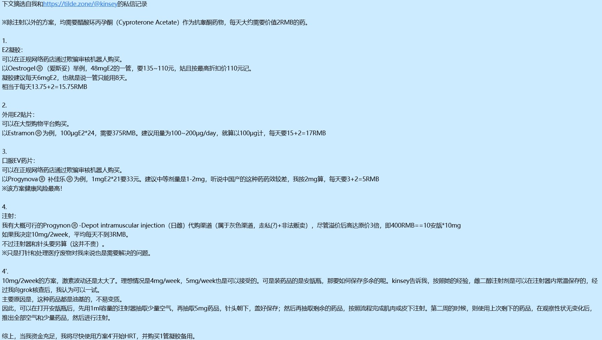

不建议在注射器内长期保存药物
有极大的受污染风险，注射器本身并不是一个合格的密封容器，透气透光透氧甚至有开口透颗粒物
由于药物是油基的，还会有与胶塞上的润滑硅油互溶，甚至渗过的可能性
如果一定要5mg/week的话，建议打一半扔一半
或者找另一个愿意采取此方案的姐妹进行一个「拼好糖」(
注意不要用同一根注射器拼好糖!!!
您需要两根注射器分别抽0.5ml☝🤓

有极大的受污染风险，注射器本身并不是一个合格的密封容器，透气透光透氧甚至有开口透颗粒物
由于药物是油基的，还会有与胶塞上的润滑硅油互溶，甚至渗过的可能性
如果一定要5mg/week的话，建议打一半扔一半
或者找另一个愿意采取此方案的姐妹进行一个「拼好糖」(
注意不要用同一根注射器拼好糖!!!
您需要两根注射器分别抽0.5ml☝🤓

省流，我决定等资金充足之后，打日雌（方案4'）
吃糖还是健康风险太大了，关键实际上也不划算
有无有经验的姐姐或者妹妹告诉我用注射器储存日雌是否可行？就我目前了解到的信息来看，是没问题的。 https://t.co/9WflwivPUf https://t.co/oAaugVUWRV
吃糖还是健康风险太大了，关键实际上也不划算
有无有经验的姐姐或者妹妹告诉我用注射器储存日雌是否可行？就我目前了解到的信息来看，是没问题的。 https://t.co/9WflwivPUf https://t.co/oAaugVUWRV